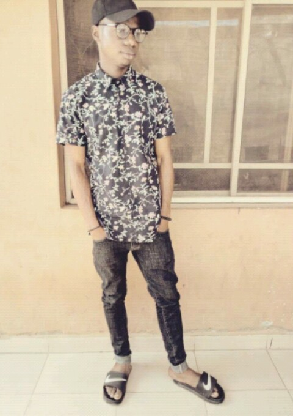

MY ACHIEVEMENT
My name is Alli Nathaniel Adedapo,A native of Ekiti state. I grewed up at Offa,kwara state where i attended my primary and secondary school education.
I am a student of library and information science 200lvl in kwara state university of which i just got admitted. A direct entry student IJMB of which i did my IJMB program at OSUN STATE COLLEGE OF EDUCATION ILESA, OSUN STATE.
MY ACHIEVEMENTS;
i had an excellent point after my IJMB program at Ilesa, Osun state, which allowed me to look for admission into Kwasu and thank God I was offered.
I am also a certified cooking chef. I hold a degree in Hospitality Management of which i had my training at YEKODS catering and culinary college Ilorin, Kwara State which i had one year experience in catering and culinary services.
I have been to several state in nigeria for an occasion with my bossand bosses for my training of which i excelled well.
I have cooked in different party occasions,seminars,birthday etc and i was even part of the cooking team that cooked on the presidential inauguration dinner night in Abuja some month ago.
I was assign with the tasks of traditional meals,drinks and cocktails.
I am well skilled in foreign and local meals,snacks etc.
During my program in the catering industry i was awarded and recongnised as the best staff of the Week,Month and even the best student of the Year.
I am so glad I'm going be the privillege owner of a RESTAURANT soon in Kwara State, which is under process by the government agency NAFDAC.
In sport activities I participate in football which i happened to be the captain of my school team, and I led them to the semi final of the state football game held in Ilorin,Kwara State which i was awarded the outstanding player and as the most goal scorer in the tournament.
Due to my performance in the tournament which the governor of the state attended he commended me and advice to put more effort into football and then gave me a token of 20 thousand naira.
This is my first ever webpage design and i am so excited and glad to be the author of it
MEET NATHAN
next
back
home
{kind=link}